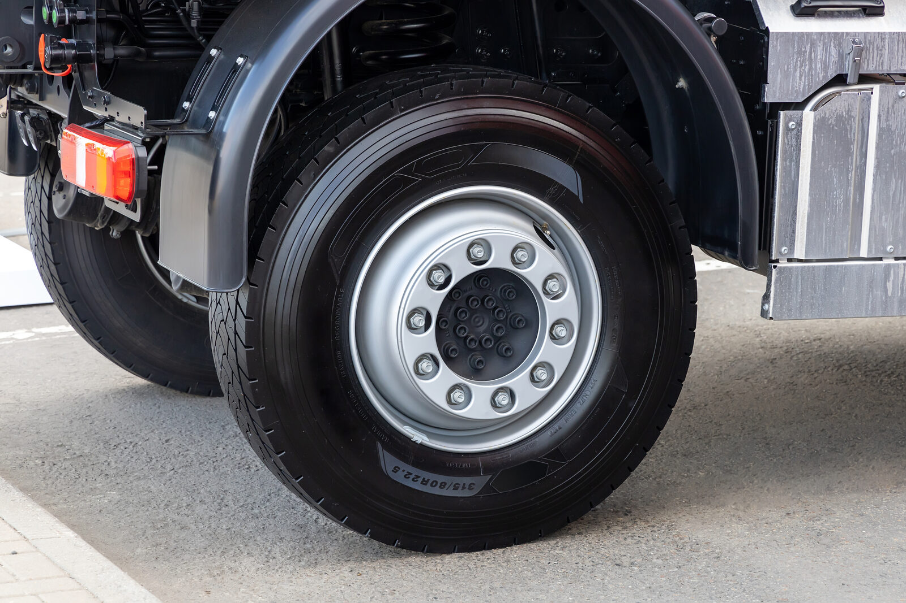

Home / Blog / Exposed Bead or Cord
PROCESS GUIDEUnder FMVSS 117, a casing with exposed bead wire or cord fabric before processing cannot be retreaded, and repairs do not change that. What the standard and NHTSA say, and how an in-house line can screen for it at intake.
Published October 22, 2026 · Good Hope Retreaders

Most casing rejects are judgement calls: how big is the injury, how old is the casing, is the belt package sound. One rejection is not. In the US retread standard, a casing with exposed bead wire or exposed cord fabric before processing is out, and no repair changes that. For a fleet that runs its own line, that makes the bead area one of the cheapest places to catch an unretreadable casing before any rubber is removed.
This guide summarises the wording of the standard and two NHTSA interpretation letters, then suggests how an intake inspection can use them. It is deliberately short and carries no cost figures, because none of the sources we reached measured one.
We could not open the primary pages (eCFR, NHTSA) from our research environment, so what follows reflects what search results reported from each publisher. Read the current text of 49 CFR 571.117 and the NHTSA letters yourself before you build a policy on them. This post covers the US federal standard only; we did not research Canadian or Ontario requirements for this post, so confirm what applies to your operation.
Standard No. 117 (Retreaded Pneumatic Tires), codified at 49 CFR 571.117, sets requirements at S5.2.1 for the casing. As reproduced in the search results from the eCFR/Cornell LII and J. J. Keller compliance texts, it reads that no retreaded tire shall be manufactured with a casing:
Two practical points follow from the wording. Condition (a) is about the casing as it arrives, before any buffing. Condition (b) is about what happens on your own line during processing, which is why buffing depth and rasp work matter (see buffing and rasping for bond quality).
Taken together: the question an inspector has to answer is not “is something showing?” but “what exactly is showing?” Bead wire or ply cord means reject; chafer fabric does not.
This section is reasoning, not data. A fleet that runs its own line inspects the casing at intake, before it has spent anything on buffing, repair materials or curing. That is the cheapest moment to apply the S5.2.1(a) test:
The point is control: when the casing decision is made at your own intake bench, against a written standard, it is yours to apply consistently and to audit. We are not claiming a specific saving from doing so.
We supply retreading machinery, consumables, components and repair tools from our Ontario warehouse, with transparent all-in Canadian pricing and local service. Tell us your tire sizes and volume and we will help you size the equipment and keep it supplied.
Request a quote →Send us your requirements and we'll get back to you within 24 hours with pricing and lead times — no obligation.